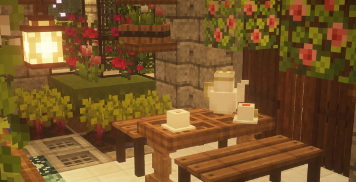
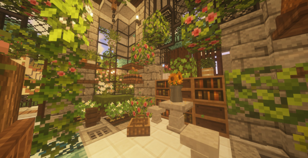

WELCOME TO HANANACRAFT!
JAVA EDITION CIT ADD-ON
Hananacraft is a Minecraft CIT resource pack that adds items to make your world more aesthetically pleasing. Please note that this pack:
swaghypee Follow
 When life becomes too hectic, rest your weary heart at Moonflower Conservatorium...
I'm (not exactly) back! But good news! I recently got a new laptop with a much better graphics card than my previous one, so I'm planning on doing video tours of my builds~
Oh also also, I'm heading off to uni soon (cries) but before that, I promise to drop one last CIT pack, and maybe a video showing my CIT-making process! So lemme know if ya'll would be interested in that! I won't spoil too much of the new CIT pack, but it's a thank you to all the support and love I've received for my work
p.s. tbh idk if there even is a need for more CIT packs? I feel like people may be getting overwhelmed by all the options hahah, but yeahhh Im super interested in hearing thoughts on that!